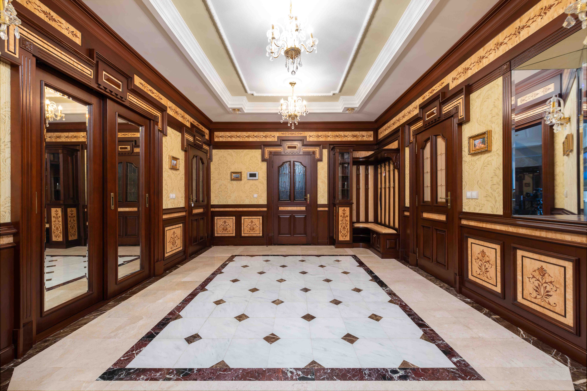

Uneven sheen
Dull or patchy areas may indicate finish wear, contamination or earlier repairs.
SERVICE DETAILS / TRADITIONAL FINISHING
A hand-applied shellac finish, selected with care for the piece.

SERVICE OVERVIEW
French polishing is a technique that applies shellac dissolved in alcohol with a polishing pad. Thin layers are worked gradually to develop a finish that complements suitable wooden surfaces.
It is distinct from varnishing and lacquer finishing. The material, existing finish and intended use determine whether it is appropriate for your piece.
Request a French Polishing Assessment ↗COMMON CONCERNS
Dull or patchy areas may indicate finish wear, contamination or earlier repairs.
Water rings, heat marks and scratches need assessment to establish their depth and likely treatment.
Broader deterioration may require more than a spot repair. The existing material guides the scope.
SUITABLE PIECES
Tables, desks and cabinets with suitable wood and finish conditions.
Original finish and patina considered before recommending intervention.
Selected fitted woodwork, assessed alongside access, use and environmental conditions.
INSPECTION & PREPARATION
Identify the wood, existing finish, damage and previous repairs. Discuss what should be preserved.
Clean and address contamination. Suitable repairs and grain preparation are agreed for the surface.
Build shellac in controlled layers with a pad, allowing the process and drying stages appropriate to the work.
Review the agreed tone and sheen, then explain curing, handling and ongoing care.
MATERIAL & FINISH OPTIONS
The choice of shellac affects tone and clarity. Existing surfaces and the desired appearance guide selection.
Trials help establish a suitable relationship with surrounding wood. Exact invisible matching is not guaranteed.
The final appearance is discussed in context, from a restrained sheen to a more reflective finish where suitable.
FINISHING EXAMPLE
Move the slider to explore the comparison layout. Replace these sample assets with photographs of the same restoration project.


PROJECT LAYOUT · SAMPLE CONTENT
WHY THIS TECHNIQUE
Hand application offers a considered approach to tone, depth and sheen.
Some shellac finishes can be repaired locally, depending on condition and damage.
Assessment can identify opportunities to retain sound finish and original character.
SERVICE LIMITATIONS
PRICING EXPLAINED
Surface area, profiles, carving and access affect the time needed for preparation and application.
Contamination, damaged finish and structural or surface repairs influence the required work.
Colour trials, sheen, on-site conditions and workshop handling are considered in the assessment.
FRENCH POLISHING FAQS
No. French polishing is a hand application technique using shellac. Varnishes and lacquers are separate finishing systems with different properties.
Sometimes. Its condition, compatibility and the damage determine whether cleaning, localized repair or broader refinishing is appropriate.
Preparation, repairs, surface size and drying or curing requirements all affect the schedule. Timing is discussed after assessment.
Follow the guidance provided for the specific finish. Drying to the touch does not necessarily mean the piece is ready for normal use.
Not necessarily. Marks extending into the wood or fragile veneers can limit treatment. Expectations should be agreed before work begins.
RELATED SERVICES
Repairs and refinishing that consider construction and original character.
Explore services ↗A protective finish chosen for the material and intended use.
Explore services ↗Assessment and treatment of localized damage and finish wear.
Explore services ↗LET THE PIECE GUIDE THE FINISH